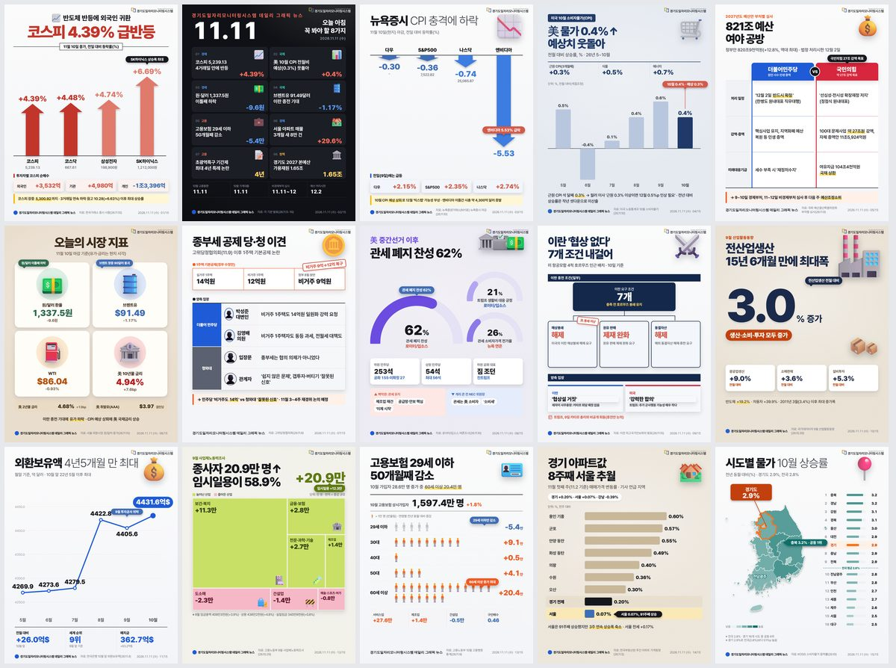

11.11.(수) 데일리 그래픽뉴스
오늘의 일자리·경제 뉴스·통계 15건

- 01코스피 4.39% 급반등한국거래소 증시 시황(26.11.10)
- 02오늘 아침 꼭 봐야 할 8가지각 기관 발표(26.11.5~10)
- 코스피 4.39% 반등 · 한국거래소 증시 시황(26.11.10)
- 美 10월 CPI 0.4% 상승 · 미국 노동통계국 10월 CPI(26.11.10)
- 원·달러 1,337.5원 · 서울 외환시장 종가(26.11.10)
- 브렌트유 91.49달러 · ICE선물거래소 유가 마감(26.11.10)
- 고용보험 29세 이하 50개월째 감소 · 고용노동부 10월 고용행정 통계(26.11.9)
- 서울 아파트 매물 29.6% 증가 · 아실 매물 통계(26.11.7)
- 초광역특구 기간제 4년 특례 논란 · 국회 예결위 질의(26.11.9)
- 경기도 2027 본예산 가용재원 · 경기도 본예산 기초안(26.11.5)
- 이번 주 일정(고용동향·가계대출 11.11) · 주간 경제 일정(26.11.8)
- 03뉴욕증시, CPI 충격에 하락뉴욕증권거래소(NYSE) 뉴욕증시 마감(26.11.10)
- 04美 10월 소비자물가 0.4% 상승미국 노동통계국 10월 소비자물가(26.11.10)
- 05821조 예산 심사, 여야 공방국회 예산결산특별위원회 부처별 심사(26.11.9)
- 06오늘의 시장 지표서울 외환시장 원/달러 종가(26.11.10)
- 원/달러 1,337.5원 · 서울 외환시장 종가(26.11.10)
- 브렌트유·WTI · NYMEX·ICE 유가 마감(26.11.10)
- 美 국채 2년·10년물 · 미국 국채시장(26.11.10)
- 07종부세 비거주 1주택 공제, 당청 이견고위당정협의회(26.11.9)
- 08美 중간선거 이후 관세 공방로이터/입소스 여론조사(26.11.10)
- 09이란 '협상 없다', 7개 조건 내걸어이란 최고국가안보회의 발표(26.11.10)
- 109월 전산업생산 3.0% 증가국가데이터처 9월 산업활동동향(26.10.30)
- 11외환보유액 4,431.6억 달러한국은행 10월 말 외환보유액(26.11.4)
- 129월 사업체 종사자 20.9만 명 증가고용노동부 9월 사업체노동력조사(26.10.29)
- 13고용보험 29세 이하 50개월째 감소고용노동부 10월 고용행정 통계(26.11.9)
- 14경기 아파트값 8주째 서울 추월한국부동산원 주간 아파트 가격동향(26.11.5)
- 15시도별 소비자물가 경기 2.9%KOSIS 소비자물가 등락률(26.10)
경기도 31개 시군 일자리 통계는 경기도일자리모니터링시스템에서 확인하세요
stats.gjf.or.kr 바로가기본 카드뉴스는 AI를 활용해 제작하고 경기도일자리재단 데이터팀이 검수하였습니다. 수치 인용 시 원문을 확인해 주시기 바랍니다.